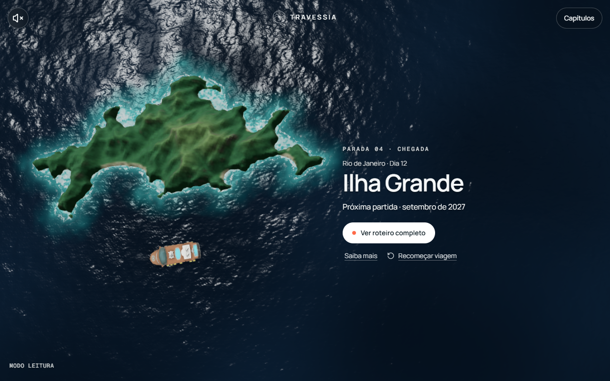
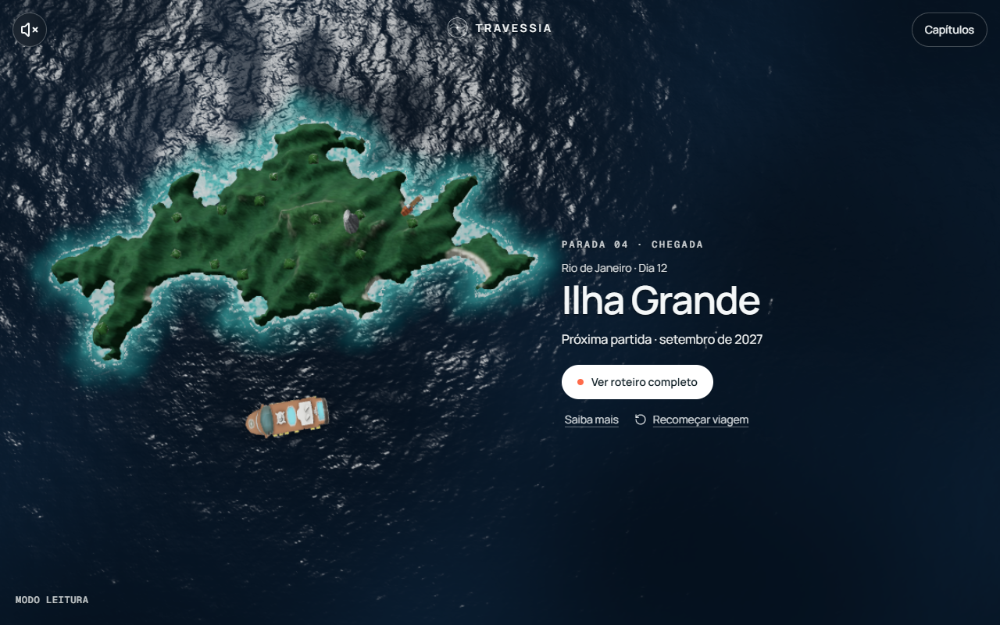

Ilha Grande · issue #71
Matched production cameras, viewport, tier and render DPR. Move the divider to compare the retained baseline with the candidate. The owner approved the final visuals on 2026-10-05. Physical-phone performance remains unvalidated.


Candidate on the leftBaseline on the right
Open baseline · Open candidate · Verification report
The required ordinary Stop 04 asset-art captures: